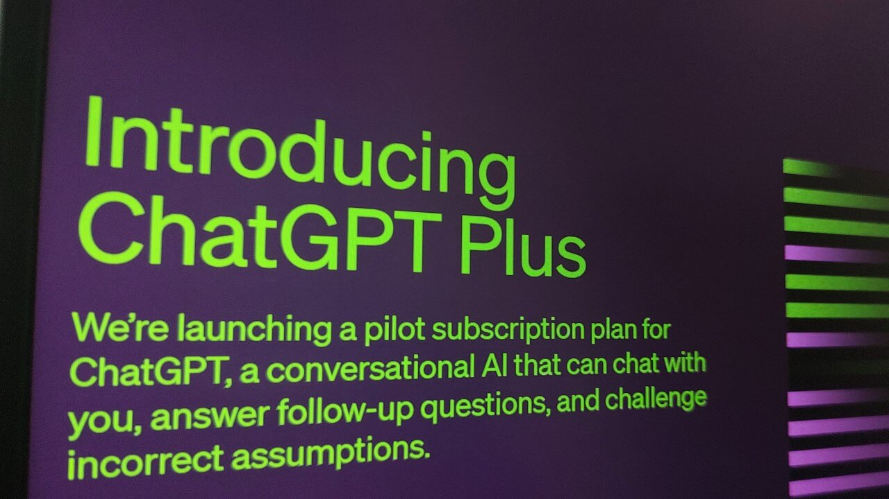

OpenAI has announced the launch of its premium chatbot service ChatGPT Plus in India. The subscription is now available at a price of ₹1,650 per month. ChatGPT Plus gives users access to OpenAI's latest language model GPT-4 and the newly released ChatGPT Plugins feature.
Great news! ChatGPT Plus subscriptions are now available in India. Get early access to new features, including GPT-4 today: https://t.co/N6AiifcSXE
— OpenAI (@OpenAI) March 17, 2023
ChatGPT Plus offers several benefits over the free ChatGPT service, including faster response times, priority access to new features, and the ability to converse with the chatbot even during peak hours. GPT-4, which powers ChatGPT Plus, is said to be more creative and capable of collaborative tasks like generating, editing and iterating on creative and technical writing.
According to OpenAI, GPT-4 is 82% less likely to produce disallowed content and 40% more likely to generate factual responses compared to the previous GPT-3.5 model. The company announced the India launch of ChatGPT Plus on Twitter, though the service was already listed on the website earlier. However, many users had complained about issues with the payment gateway.
With the launch, India becomes one of the first countries where OpenAI is offering ChatGPT Plus. The subscription is priced similarly to the US, at $20 per month. OpenAI had introduced GPT-4 earlier this week, touting it as a major upgrade over GPT-3.5. The new model is said to be much more capable at complex creative tasks that require collaboration and multi-turn dialogues.
ChatGPT Plus is a premium version of OpenAI's general AI chatbot ChatGPT. The free ChatGPT service will continue to remain available for all users.